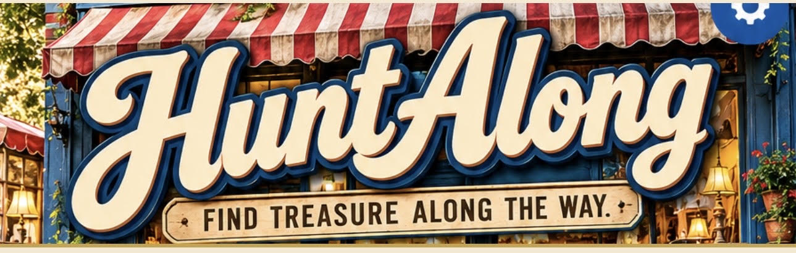
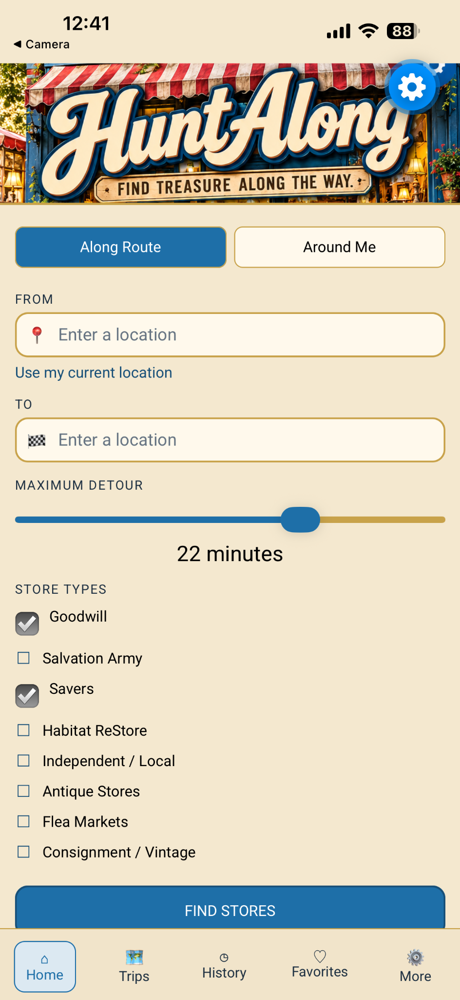
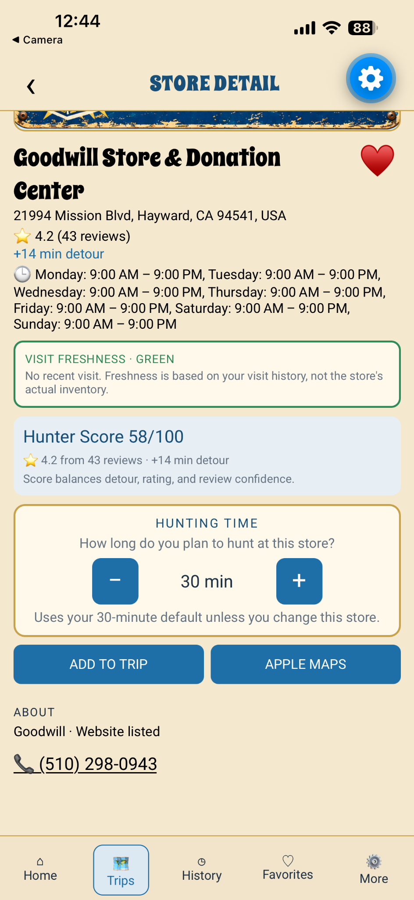

1
Choose your route
Enter where you're starting and where you're going, then choose how much of a detour you're willing to make.

HuntAlong helps you discover thrift stores and other treasure-hunting stops along the way, compare detours, build a trip, and keep moving toward your destination.

Whether you're heading across town or taking a road trip, HuntAlong is designed to help you find worthwhile stops without losing sight of your route.
Enter where you're starting and where you're going, then choose how much of a detour you're willing to make.
Search for thrift stores and other hunt-worthy destinations near your route and see the added detour.
Add stops to your trip, keep track of favorites and visits, and hand off to navigation when you're ready to go.
Look for stores that make sense for the drive you're already taking.
Set the maximum extra time you're willing to spend and compare stops more easily.
Use helpful signals such as rating, review confidence, detour and your own visit history while deciding where to stop.
Save interesting stores, build a multi-stop hunt and move from discovery to navigation.

HuntAlong is currently being tested for iPhone. We're polishing the experience before public release.